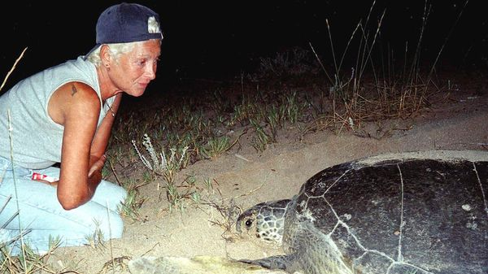

Jul 09, 2026 06:38 AM

It was the summer of 1999; and on a warm evening on Mansouri beach in southern Lebanon, Mona Khalil was strolling with a beer. She loved this beach. It was the world of her childhood holidays, running down to the rocky, sandy shore from her grandparents’ house. Her best summers had been spent here, adventuring. All the toys she had ever needed she had picked up here, and still did: weird stones, lengths of driftwood, coloured glass bottles. They now filled her house and hung clinking in the lemon and banana trees around it. This had become her dream life.
But suddenly on that evening she heard a noise, like a thud or a thump, quite close. The next thing she knew, someone was throwing sand at her. She looked down to see, not a dog or a fox, but a huge turtle digging a nest in which to lay her eggs. Later, when she had read more, she learned that this was a green sea turtle, a species that was critically endangered. They were herbivores, eating sea-grass and seaweed, and might live to 100 years old. This particular female would have swum hundreds, maybe even thousands, of miles to lay her eggs exactly here, where 30 years ago she had hatched. Unerring instinct had led her to Ms Khalil’s feet and then, her eggs laid and covered up, wearily back into the sea again. And all Ms Khalil could think of was how beautiful she was.
This was the point at which her life changed, and became only turtles. She did not talk much about the years before. School in Beirut, a marriage, and a son, Omar, killed at eight by a passing boat as he gazed at starfish underwater. An escape to the Netherlands during Lebanon’s civil war, where she stayed for ten years and worked as a porcelain restorer. Then, in 1999, the return with her friend, Habiba Fayed, to her grandparents’ house. It was falling down, swallowed in a forest of weakened trees. Together they put it to rights. She painted it orange as a homage to the Netherlands, and visitors noticed that Dutchness had touched her, too. A certain bluntness, an unLebanese reserve, a refusal to be swayed, and a dogged belief in just getting on with it.
“It” was a project, soon world-famous, to protect the turtles and their nests. It included carnivorous loggerhead turtles, also endangered and also users of Mansouri beach. Government, central or local, was prostrated by war and had no possible money to give. So she funded her training of new conservationists by turning the Orange House into a B&B. It was basic, with no air-conditioning, but it was also an oasis of calm, wind chimes, home-made jam—and serious research. The high point was when she would summon her volunteers to watch as she poured out a bucket of hatchlings on the sand and the tiny creatures, flippers going frantically, scurried down to the breaking waves.
Their enemies were many. Dogs would dig up the nests to eat the eggs. Ghost crabs and birds ate the hatchlings, and plastic litter entangled them. Fishermen, working only just offshore, trapped adults in close-mesh nets and even disrupted their swims with dynamite. But the most insidious enemy was development. More and more flats, hotels and resorts were rising on either side of Mansouri; its unspoilt tranquillity was becoming rare. Security lights competed with the moon to confound the hatchlings’ sense of direction. Yet this small, hemmed-in site was the home to which the female hatchlings would one day feel compelled to return.
She campaigned in all the ways she could think of. Before dawn she and her volunteers would patrol the shore, picking up litter and looking for fresh turtle tracks. She measured nests, roofed them with wire mesh, counted the papery-shelled eggs, helped the hatchlings out and sent her data to global conservation groups. After that, she fought. Passionately, sometimes tearfully, she repeated that the turtles had a right to the beach. It had been theirs for the past 250m years, before humans existed. Who were humans to kick them out? All they were asking for was a short season to nest. Then they, her family, would be gone again.
Many people hated her incessant “No this, no that”. She understood: without work, without food, the last thing on their minds was ecology. Almost no Lebanese came to help her; only foreigners. Some locals even turned up with Kalashnikovs. But at least she made the fishermen give up using dynamite, and persuaded two local mayors to declare the beach a hima, a community reserve. She tried to restrict partying there, and stop cars driving onto it. She also did her best to obstruct the building of the Palagio Beach Resort almost next door, which contravened planning rules. And she petitioned the UN peacekeepers stationed in south Lebanon to stop throwing their rubbish into the sea.
For war was the other constant consideration. The Orange House was only 12km inside the Israeli border. In 2006, when Israel attacked in nesting season, she asked Hizbullah fighters point-blank to leave the beach. They did, but then set up rockets right behind the house. She and Habiba had to flee, first to a hut on the beach, then, after the Orange House was hit, to Beirut. When they returned, it was to find a military checkpoint next door. In future, volunteers had to be cleared through security. Ironically, though, when war (or covid) emptied the beaches the turtles thrived. In 2007 she reported that around 5,000 hatchlings had successfully launched themselves.
Nonetheless, she made the resolution never to leave Mansouri beach again. No matter what, she would stay in her dream place. She made a statue for the garden out of all the Israeli shells that had already fallen on her house. Her dealings with Hizbullah (she had to; they were the local authority) possibly compromised her, but she waved that off. She was just a civilian. Anyway, there was no other heaven but her Orange House among the trees and by the beach. That was it. That was her patch, to which she had to return; as surely as the female turtles did, with unwavering determination, over mile after mile of rolling sea. ■